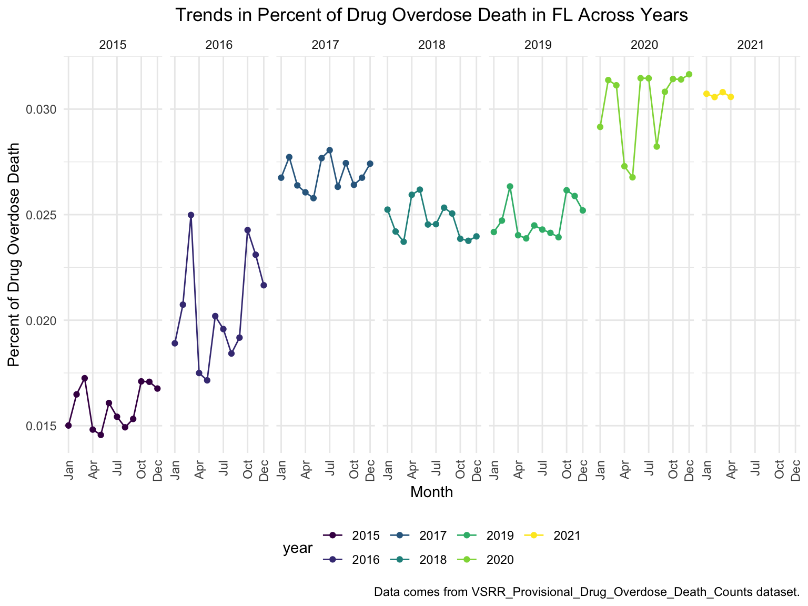
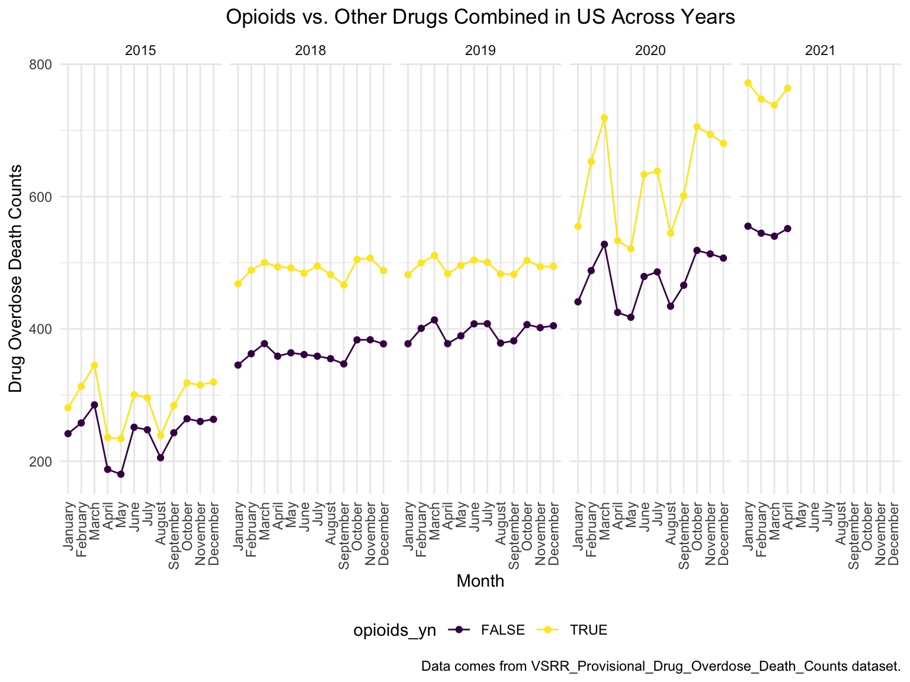
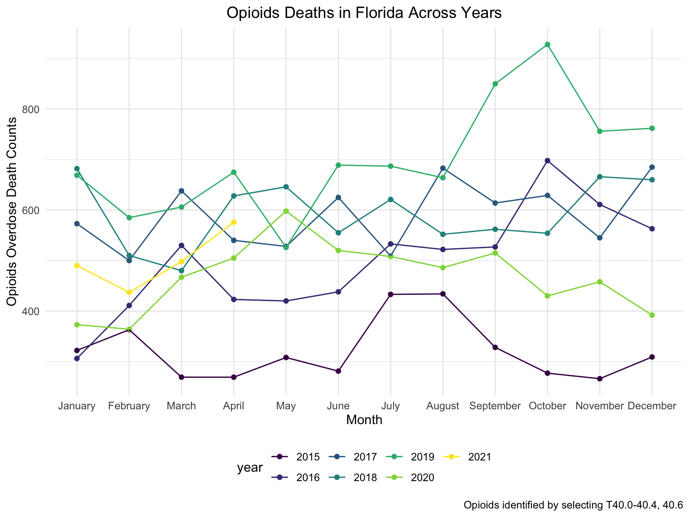
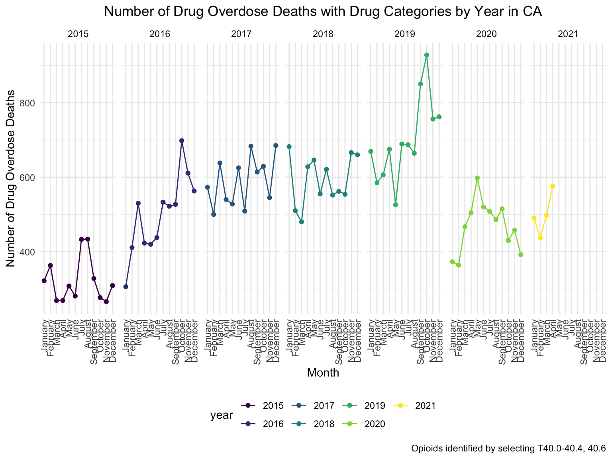
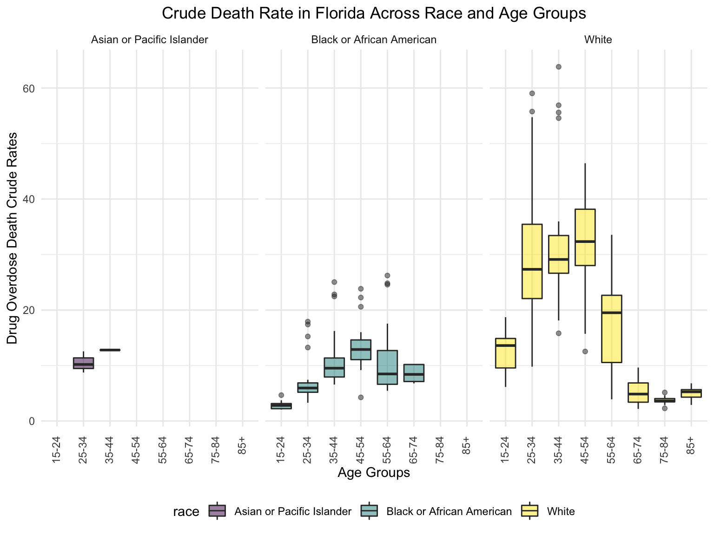
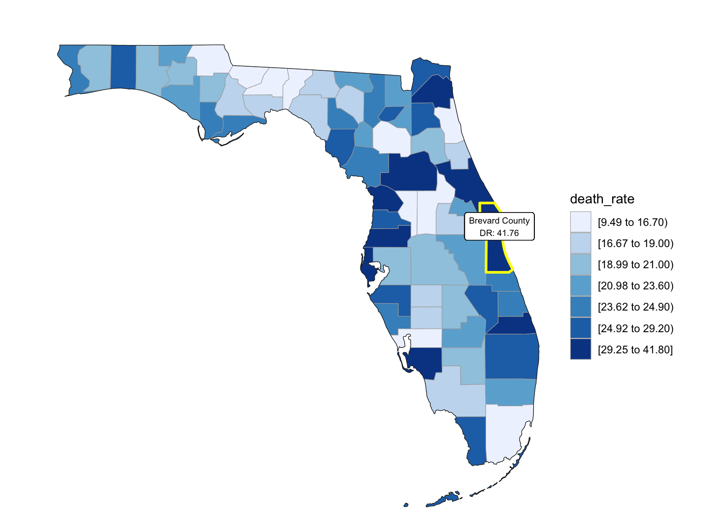

Florida Data Analysis
Florida over all
drug_overdose = read_csv("./data/VSRR_Provisional_Drug_Overdose_Death_Counts.csv") %>%
janitor::clean_names()
state_level = c(state.name[1:8], "District of Columbia", state.name[9:32],"New York City", state.name[33:50])
drug_overdose_52 =
drug_overdose %>%
filter(!(state_name %in% c("United States"))) %>%
relocate(state_name) %>%
mutate(month = factor(month, levels = month.name), # change month and year to factor
year = factor(year),
state_name = factor(state_name, levels = state_level)) %>%
arrange(state_name) %>%
group_by(state_name, year) %>%
mutate(month = sort(month))
fl_death =
drug_overdose_52 %>%
filter(state_name %in% "Florida",
indicator %in% c("Number of Deaths", "Number of Drug Overdose Deaths")) %>%
select(year, month, indicator, deaths = data_value) %>%
pivot_wider(
names_from = indicator,
values_from = deaths
) %>%
janitor::clean_names() %>%
group_by(year, month) %>%
mutate(
percent_overdose_death = number_of_drug_overdose_deaths / number_of_deaths
)
fl_death %>%
ggplot(aes(x = month, y = percent_overdose_death, group = year, color = year))+
geom_point()+
geom_line()+
ggtitle("Trends in Percent of Drug Overdose Death in FL Across Years") +
theme(plot.title = element_text(hjust = 0.5)) +
labs(y = "Percent of Drug Overdose Death", x = "Month", caption = "Data comes from VSRR_Provisional_Drug_Overdose_Death_Counts dataset.")
fl_death %>%
ggplot(aes(x = month, y = percent_overdose_death, group = NA, color = year))+
geom_point()+
geom_line()+
scale_x_discrete(breaks = c("January", "April", "July", "October", "December"),
labels = c("Jan", "Apr", "Jul", "Oct", "Dec")) +
theme(axis.text.x = element_text(angle = 90, vjust = 0.5, hjust= 1))+
ggtitle("Trends in Percent of Drug Overdose Death in FL Across Years") +
theme(plot.title = element_text(hjust = 0.5)) +
labs(y = "Percent of Drug Overdose Death", x = "Month", caption = "Data comes from VSRR_Provisional_Drug_Overdose_Death_Counts dataset.")+
facet_grid(.~year)
There’s a clear trend from years to years that in Florida, percent of drug overdose deaths increase overtime. In 2016, the percent of drug overdose deaths changes drastically from month to month, while in 2020, the percent of deaths reached its new high, made up more than 3% of the total deaths.
Opioids in years
It’s extremely hard to find drug-specific data for those state missing specific drug types. Unfortunately, Florida is one of them. By contrast, data on opioid is much easier to find. There is another reason that we chose to select opioid instead of other drug types: it accounts for most of the death counts in the US across years. We show our justification down below.
opioids_df =
drug_overdose_52 %>%
ungroup() %>%
select(state_name, year, month, indicator, data_value) %>%
filter(!(state_name %in% c("Alabama", "Arkansas", "Florida", "Idaho", "Louisiana", "Minnesota", "Nebraska", "North Dakota", "Pennsylvania")),
str_detect(indicator, "T4"),
!year %in% c(2016, 2017)) %>%
mutate(opioids_yn = ifelse(str_detect(indicator, "opioids"), TRUE, FALSE)) %>%
group_by(year, month, opioids_yn) %>%
summarize(opioids_rate = mean(data_value, na.rm = TRUE))
opioids_df %>%
ungroup() %>%
ggplot(aes(x = month, y = opioids_rate, group = opioids_yn, color = opioids_yn))+
geom_point()+
geom_line()+
theme(axis.text.x = element_text(angle = 90, vjust = 0.5, hjust= 1))+
ggtitle("Opioids vs. Other Drugs Combined in US Across Years") +
theme(plot.title = element_text(hjust = 0.5)) +
labs(y = "Drug Overdose Death Counts", x = "Month", caption = "Data comes from VSRR_Provisional_Drug_Overdose_Death_Counts dataset.")+
facet_grid(.~year)
A picture is worth thousands of words, during the past 6 years, the opioid’s line was high above all other drugs combined, which proved our statement above.
Opioid Analyses in Florida
# read in data
fl_opi_death = read_csv("./data/fl_opi_death_15_19.csv") %>%
janitor::clean_names() %>%
select(state_name = state, year, month, deaths)
fl_opi_death_add = read_csv("./data/fl_opi_death_20_21.csv") %>%
janitor::clean_names() %>%
select(state_name = occurrence_state, year = year_code, month, deaths)
fl_opi_death = bind_rows(fl_opi_death, fl_opi_death_add) %>%
filter(!is.na(month)) %>%
separate(month, into = c("month", "useless"), sep = "\\,") %>%
select(-useless) %>%
mutate(month = substr(month, 1,3),
month = month.name[match(str_to_title(month), month.abb)],
month = factor(month, levels = month.name),
year = factor(year)) %>%
select(-state_name) %>%
slice(-77) # May 2021 is fairly provisional and inconsistent with other states
fl_opi_death %>%
ggplot(aes(x = month, y = deaths, group = year, color = year))+
geom_point()+
geom_line()+
ggtitle("Opioids Deaths in Florida Across Years") +
theme(plot.title = element_text(hjust = 0.5)) +
labs(y = "Opioids Overdose Death Counts", x = "Month", caption = "Opioids identified by selecting T40.0-40.4, 40.6")
fl_opi_death %>%
ggplot(aes(x = month, y = deaths, group = NA, color = year))+
geom_point()+
geom_line()+
theme(axis.text.x = element_text(angle = 90, vjust = 0.5, hjust= 1))+
ggtitle("Opioids Deaths in Florida Across Years") +
theme(plot.title = element_text(hjust = 0.5)) +
facet_grid(.~year)+
labs(
title = "Number of Drug Overdose Deaths with Drug Categories by Year in CA",
x = "Month",
y = "Number of Drug Overdose Deaths",
caption = "Opioids identified by selecting T40.0-40.4, 40.6"
) +
theme(axis.text.x = element_text(angle = 90, hjust = 1)) 
Although in a zig-zag fashion, the death counts cause mainly by Opioids is climbing, every single month. There is a drastic drop between 2019 and 2020, probably because 1. the data is provisional for 2020 and 2021, indicated by the CDC; 2. COVID-19 interfered with the autopsy of drug overdose investigation.
By Age Group and Race
fl_death_by_age =
read_csv("./data/agegroup_race_state_year_99-19.csv") %>%
janitor::clean_names() %>%
select(state, year, ten_year_age_groups, race, deaths, population) %>%
filter(state %in% c("Florida")) %>%
mutate(year = factor(year),
crude_rate = deaths/population * 100000)
fl_death_by_age %>%
mutate(ten_year_age_groups = gsub("years", "", ten_year_age_groups)) %>%
ggplot(aes(x = ten_year_age_groups , y = crude_rate, fill = race)) +
geom_boxplot(alpha = 0.5)+
ggtitle("Crude Death Rate in Florida Across Race and Age Groups") +
theme(plot.title = element_text(hjust = 0.5)) +
labs(y = "Drug Overdose Death Crude Rates", x = "Age Groups")+
facet_grid(~race)+
theme(axis.text.x = element_text(angle = 90, vjust = 0.4, hjust = 1))
Asian or Pacific Islanders only have drug overdose deaths cases between 25-44 age groups, while both Black or African Americans and White people have drug overdose deaths cases from age group 15-24 to nearly 85+. It’s also clear that in general white people have the highest crude death rates in nearly each age group, and the crude death rates reached as high as 60+ deaths/100,000 white people.
Income
fl_eco_df =
read_csv("./data/median_household_income_fl.csv") %>%
janitor::clean_names() %>%
select(year, household_income_by_race, household_income_by_race_moe, geography) %>%
filter(
str_detect(geography, "FL|United States|Florida"),
year >= "2015") %>%
mutate(year = factor(year))
fl_eco_df %>%
mutate(text_label = str_c("Year: ", year, "\nMedian Household Income: $", household_income_by_race,
"\nMargin of error: ± $", household_income_by_race_moe)) %>%
plot_ly(
x = ~year, y = ~household_income_by_race, color = ~geography, text = ~text_label,
alpha = 0.5, type = "scatter", mode = "markers+lines", colors = "viridis", error_y = ~list(array = household_income_by_race_moe)) %>%
layout(
title = "Median Household Income: FLorida vs. The U.S",
xaxis = list(title = "Year"),
yaxis = list(title = "Median Household Income"))The median household income of Florida and all of its region divisions all fell below the median household income of US. There’s a steady trends in all lines, indicating that the median household income increases over the years.
#patchwork
income_drug_df =
fl_death %>%
ungroup() %>%
group_by(year) %>%
summarize(overdose_death_rate = sum(number_of_drug_overdose_deaths)/sum(number_of_deaths)) %>%
inner_join(., fl_eco_df %>% filter(geography %in% "Florida"))
year_death =
income_drug_df %>%
ggplot(aes(x = year, y = overdose_death_rate, group = NA))+
geom_point()+
geom_line()+
ggtitle("Crude Death Rate Across Years in FL") +
theme(plot.title = element_text(hjust = 0.5)) +
labs(y = "Drug Overdose Death Crude Rates", x = "Year")
income_year =
income_drug_df %>%
ggplot(aes(x = year, y = household_income_by_race, group = NA))+
geom_point()+
geom_line()+
ggtitle("Median Household Income Across Years in FL") +
theme(plot.title = element_text(hjust = 0.5)) +
labs(y = "Median Household Income ", x = "Year")
smooth =
income_drug_df %>%
ggplot(aes(x = household_income_by_race, y = overdose_death_rate, group = NA))+
geom_point()+
geom_smooth(method = "lm", se = FALSE, color = "royalblue4")+
ggtitle("Crude Death Rate vs. Median Household Income") +
theme(plot.title = element_text(hjust = 0.5)) +
labs(y = "Drug Overdose Death Crude Rates", x = "Median Household Income")
(year_death + income_year)/smooth
Though we only have several points, the smoothed line of the bottom figure still showed a positive relation between drug overdose crude rate and median household income. This relationship can also be seen in the above two figure: as year goes by, the income rose, while the drug overdose death crude rates also rose.
Counties change over the years
Last but not the least, we wanted to draw maps to see what are the distribution of drug overdose death across counties. High crude death rates happened along the coastline for 2003 and 2008, specifically along middle east and west coasts, as well as in Key West Islands. Later in year 2013 and 2018, counties that have high crude death rates aggregated more the center of this peninsular, while the county that has the highest crude death rates is still along the coast. Together with the median household income graph above, we can see that both Miami-Fort Lauderdale-West Palm Beach and Tampa-St. Petersburg-Clearwater regions have low household income and have higher drug overdose death rates.
Counties change, 5-yr interval
2003
year_select = 2003
start_county_df = left_join(fl_county_df,abc, by = "county") %>%
select(county, year, death_rate, fips) %>%
filter(year == year_select)
fips_add = c(12027, 12091, 12109, 12111)
a = 1
for (i in c(13,46,55,56)){
start_county_df[i,4] = fips_add[a]
a = a+1
}
start_county_df %>%
group_by(fips) %>%
mutate(fips = as.numeric(fips)) %>%
rename(region = fips,
value = death_rate) %>%
county_choropleth(state_zoom = c("florida"),
legend = "death_rate")+
highlight_county(start_county_df[which.max(pull(start_county_df, death_rate)),])+
add_text_county(start_county_df[which.max(pull(start_county_df, death_rate)),])
2008
year_select = 2008
start_county_df = left_join(fl_county_df,abc, by = "county") %>%
select(county, year, death_rate, fips) %>%
filter(year == year_select)
fips_add = c(12027, 12091, 12109, 12111)
a = 1
for (i in c(13,46,55,56)){
start_county_df[i,4] = fips_add[a]
a = a+1
}
start_county_df %>%
group_by(fips) %>%
mutate(fips = as.numeric(fips)) %>%
rename(region = fips,
value = death_rate) %>%
county_choropleth(state_zoom = c("florida"),
legend = "death_rate")+
highlight_county(start_county_df[which.max(pull(start_county_df, death_rate)),])+
add_text_county(start_county_df[which.max(pull(start_county_df, death_rate)),])
2013
year_select = 2013
start_county_df = left_join(fl_county_df,abc, by = "county") %>%
select(county, year, death_rate, fips) %>%
filter(year == year_select)
fips_add = c(12027, 12091, 12109, 12111)
a = 1
for (i in c(13,46,55,56)){
start_county_df[i,4] = fips_add[a]
a = a+1
}
start_county_df %>%
group_by(fips) %>%
mutate(fips = as.numeric(fips)) %>%
rename(region = fips,
value = death_rate) %>%
county_choropleth(state_zoom = c("florida"),
legend = "death_rate")+
highlight_county(start_county_df[which.max(pull(start_county_df, death_rate)),])+
add_text_county(start_county_df[which.max(pull(start_county_df, death_rate)),])
2018
